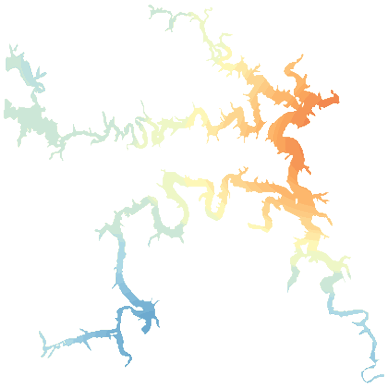

LakeScope › MO
Truman Lake today
Updated 2026-11-26 - Atlas Labs
Slightly murky, 54°F water, level steady, near normal, calm tomorrow morning.
Water level
705.46 ft
USGS gauge 06922440 - 2026-11-26
7-day trend: steady (-0.11 ft). Compared with normal for this date: -0.8 ft (same weeks, 2016-2025).
Water clarity and algae
Slightly murky Last clear view: about a week ago.
Surface temperature
54°F
seen from space on 2026-11-23

Ice
Open - 0% ice cover
Estimate from weather and satellite, not a measurement. Check the ice yourself before going on it.
Weather, next 3 days
| Day | Sky | High / low | Wind | Rain |
|---|---|---|---|---|
| Thursday | Light Snow Likely | 40 / 25°F | 13 mph N | 74% |
| Friday | Mostly Sunny | 50 / 35°F | 6 mph W | 0% |
| Saturday | Partly Sunny | 56 / 40°F | 5 mph S | 1% |
Sunrise 07:06 - sunset 16:54 - Full moon. National Weather Service.
Get the LakeScope app: alerts and the 3-D view of Truman Lake